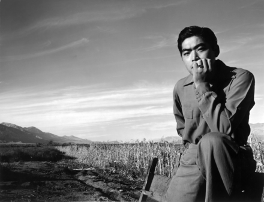

This is an archived copy of History Matters, provided by the Roy Rosenzweig Center for History and New Media. To explore this content in a new interface, visit Who Built America?.

Ansel Adams’s Photographs of Japanese-American Internment at Manzanar
http://www.loc.gov/pictures/collection/manz/
Created and maintained by the Library of Congress.
Reviewed March-April 2013.
When Ansel Adams completed his documentary project on Japanese Americans incarcerated in Manzanar, California, he thought that it was his best work to date. In 1944 the photographs were published in the book Born Free and Equal: The Story of Loyal Japanese Americans and exhibited at the Museum of Modern Art in New York. Despite Adams’s investment in the project and the attention it received at the time, the Manzanar work still remains a relatively obscure and seemingly aberrant component of Adams’s oeuvre. As an artist he is known for his majestic landscapes devoid of people, not the wartime documentary work that placed human concerns at center stage. That documentary work, however, is a crucial component of Adams’s photographic vision, and this Web site helps remedy the project’s obscurity. Adams donated the prints and negatives to the Library of Congress in the 1960s, a move that would ensure the work’s public availability.

As a curated online collection, the site provides contextual information about Adams’s career and the history of Japanese American incarceration, as well as scans of the photographs in resolutions that range from ones suitable for PowerPoint presentations to large files that measure up to print standards. This collection also innovatively includes scans of both negatives and prints. Adams conceived of photography in terms of music, as he had trained to be a classical pianist before taking up the camera. He thought of negatives as the score and prints as the performance, making the ability to compare the negative and the print very instructive for Adams scholars.
Contextual information includes background material, a bibliography, chronologies, highlights, and lists of related resources. Users can search within the collection or view all 244 photographs as thumbnails. Navigation is relatively straightforward, although from some pages it is difficult to return to the home page. For a more guided experience the site has categorized the images into four themes: daily life, portraits, agricultural scenes, and sports and leisure activities, all with thumbnails. Individual photographs are captioned with titles provided by the artist, and full metadata is available. The bibliography could use revisions. The section on Japanese American incarceration leaves out some excellent histories that introduce the topic but includes some very narrowly focused texts that might confuse nonspecialist readers. The central histories of Japanese American incarceration by Roger Daniels, including Prisoners without Trial (1993), should be added. And in the Adams section, the artist’s autobiography should be cited (Ansel Adams and Mary Street Alinder, Ansel Adams: An Autobiography, 1985).
Another excellent feature of the site is a digitized copy of Born Free and Equal, published by the magazine U.S. Camera. This book combined Adams’s photographs and text in a way intended to humanize Japanese Americans and pave the way for their relocation outside of the camps. Produced during the war, the book is extremely fragile and rare. This digital version allows it to be used in classrooms. Although the site offers no specific lesson plans, the combination of scanned prints, negatives, and the book should make this digital archive a very welcome resource for history and art history students from middle school through college.
Jasmine Alinder
University of WisconsinMilwaukee
Milwaukee, Wisconsin